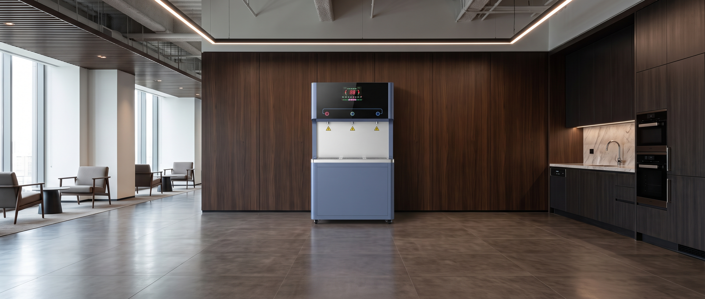
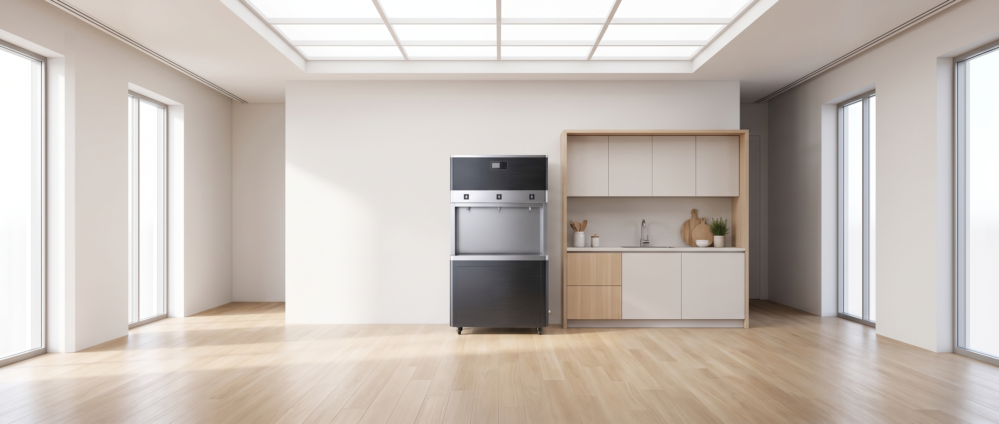
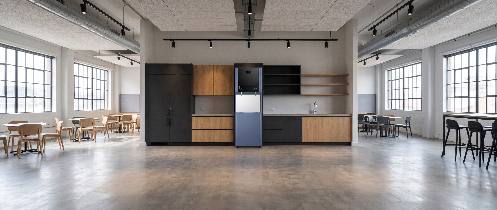

Hemat Biaya Air
Kemurnian Air
Suplai Air Non-stop
Teknologi dispenser komersial yang mengeliminasi seluruh risiko kontaminasi dan mengoptimalkan efisiensi operasional gedung Anda.
Presisi membran hingga 0.0001 mikron. Mengeliminasi klorin, logam berat, timbal, mikroplastik, serta kuman untuk standar air murni tertinggi.
Bodi kokoh dan tangki higienis yang aman untuk air minum, bebas BPA, serta mudah dibersihkan.
Dirancang khusus untuk memenuhi kebutuhan hidrasi fasilitas komersial dengan kapasitas layanan optimal hingga maksimal 50-80 orang dalam satu hari.
Paket pemeliharaan rutin mencakup penggantian filter terjadwal serta sanitasi berkala oleh teknisi resmi PT Noto Water Envirotech.
Dirancang khusus untuk kapasitas tinggi dan estetika interior fasilitas modern.
Dispenser komersial Celiol dirancang dengan estetika arsitektural yang menyatu elegan dengan interior fasilitas Anda. Menghadirkan kesan rapi, higienis, dan profesional tanpa tumpukan galon bagi staf maupun tamu kehormatan.

Paduan panel kayu gelap dan bodi dispenser berlayar digital LED memberikan sentuhan futuristik berkelas tanpa mengganggu kekhidmatan ruang pertemuan direksi.

Menyatu serasi dengan konsep pantry Skandinavia kayu terang. Mengeliminasi lantai becek dan area penyimpanan galon kosong sehingga ruang istirahat staf terasa lebih lega.

Konstruksi bodi kokoh dan tangki berkapasitas besar siap melayani pergantian shift ratusan staf kantin secara berurutan dengan debit stabil dan pendinginan cepat.
Dispenser komersial Celiol dirancang andal dan fleksibel untuk memenuhi standar higienitas, efisiensi operasional, dan daya tahan tinggi di beragam fasilitas bisnis hingga ruang publik.
Lebih dari 150+ perusahaan & institusi di Indonesia telah beralih ke dispenser komersial tanpa galon Celiol.
"Instalasi Celiol Deluxe CSWDS di kantor kami membuat pantri jauh lebih rapi, modern, dan higienis. Karyawan sangat puas dengan ketersediaan air segar setiap saat, didukung layanan maintenance berkala yang selalu tepat waktu."
"Dispenser Celiol Ultimate Glass di Lounge lantai 22 kami sangat disukai tamu VIP. Desain panel kacanya mewah dan suhu airnya sangat stabil. Tim teknisi PT Noto Water Envirotech sangat responsif saat pemeliharaan berkala."
"Di area kantin pabrik dengan 250 pekerja ganti shift, unit Celiol Deluxe Stainless Steel terbukti sangat tangguh. Debit airnya cepat terisi kembali, bodinya kokoh, dan air minumnya terjamin steril."
"Kepatuhan sterilisasi dan air murni filtrasi RO 5-tahap sangat krusial bagi zona medis dan rawat inap. Celiol lulus audit sanitasi KARS kami dengan hasil memuaskan dan higienitas terjaga."
"Menyediakan fasilitas air minum isi ulang tumbler gratis di 4 gedung perkuliahan berhasil memangkas 80% sampah plastik botol sekali pakai di kampus. Debit 80 L/jam melayani ribuan mahasiswa tanpa jeda."
"Kapasitas pendinginan cepat Celiol CSWDS 3-Spout sangat diandalkan saat jam sibuk latihan malam hari. Member gym sangat senang karena air dingin selalu siap dan kran tingginya pas untuk botol shaker besar."
Hal-hal mendasar seputar instalasi, perawatan filter, dan skema kontrak dispenser komersial Celiol.
Teknisi Celiol akan menyambungkan selang khusus air minum berdiameter 1/4 inch dari sumber air bersih gedung (PDAM) menuju unit dispenser. Pemasangan dilakukan rapi di balik dinding, plafon, atau skirting lantai tanpa merusak estetika interior kantor.
Panduan lengkap untuk Facility Manager, HR, dan Tim Procurement.
Tim spesialis Celiol siap melakukan survei lokasi gedung dan simulasi kebutuhan air minum tanpa galon secara cuma-cuma dalam 1x24 jam kerja.
Proposal penawaran resmi akan segera kami siapkan dan kirimkan ke kontak Anda.